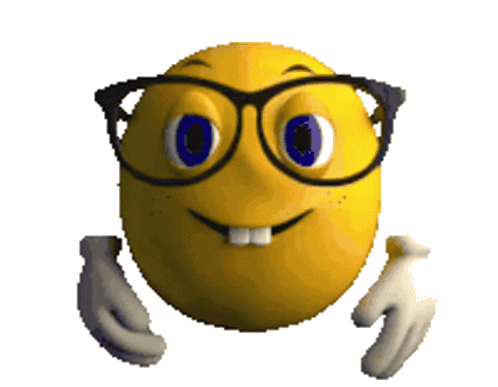
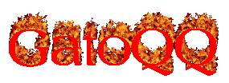

GatoQQs era un grupo de Discord formado por amantes de los gatos y de las risas. Un día, decidieron hacer una broma al famoso youtuber y streamer Capitán Gato, que tenía su propia comunidad de Discord llamada GatitosWorld. Se infiltraron en su servidor y empezaron a enviar mensajes con emojis de gatos tristes, llorando y enfadados. También cambiaron sus nombres de usuario por cosas como "GatoTraicionado", "GatoAbandonado" y "GatoSinAmor". El objetivo era hacer creer a Capitán Gato que sus seguidores estaban decepcionados con él y que querían abandonar su comunidad.
La broma no salió como esperaban. Capitán Gato se dio cuenta enseguida de que se trataba de una invasión de trolls y no se dejó engañar. En vez de enfadarse o ignorarlos, decidió devolverles la broma con humor e ingenio. Les respondió con mensajes llenos de amor, cariño y comprensión. Les dijo que los quería mucho, que eran unos gatitos muy especiales y que siempre tendrían un lugar en su corazón. También les invitó a quedarse en su servidor y a disfrutar de sus contenidos y actividades.
Los miembros de GatoQQs se quedaron sorprendidos y avergonzados por la reacción de Capitán Gato. Se dieron cuenta de que habían sido muy crueles e infantiles con alguien que solo quería divertir y entretener a su público. Se disculparon sinceramente con él y le pidieron perdón por haber intentado arruinar su día. Capitán Gato les aceptó las disculpas y les perdonó sin rencor. Incluso les ofreció la posibilidad de unirse a su comunidad si lo deseaban.
Así fue como GatoQQs pasó de ser un grupo de Discord malintencionado a ser parte de GatitosWorld, la comunidad más grande y amigable del mundo gatuno.
GatoQQs era el líder de un grupo de Discord llamado Los Gatos Locos. Le encantaba jugar Team Fortress 2 con sus amigos y pasar horas en el chat de voz. Un día, decidió que quería participar en un torneo de TF2 y convenció a sus compañeros de que se inscribieran. Sin embargo, no se dio cuenta de que el torneo era al mismo tiempo que su examen final de matemáticas. Cuando llegó el día del torneo, GatoQQs y sus amigos se conectaron al juego y se pusieron sus cascos. Estaban tan concentrados en disparar, explotar y capturar la bandera que se olvidaron por completo del examen. Cuando terminó el torneo, GatoQQs miró su reloj y se dio cuenta de su error. Había perdido el examen y su oportunidad de aprobar la materia. Además, su equipo había quedado en último lugar en el torneo. GatoQQs se lamentó por su adicción a TF2 y juró que nunca más volvería a jugar. Pero al día siguiente, volvió a conectarse al juego y a su grupo de Discord, esperando una nueva aventura.
MatrixBlack era un jugador de Team Fortress 2 que se creía el mejor del mundo. Se dedicaba a arruinar las partidas de los demás con trucos, insultos y amenazas. Un día se encontró con los GatoQQs, un equipo de amigos que jugaban por diversión y que no se dejaban intimidar por nadie. MatrixBlack los desafió a una batalla en el mapa Dustbowl, pensando que sería fácil derrotarlos. Pero se equivocó. Los GatoQQs demostraron ser unos rivales formidables, que usaban la estrategia, la cooperación y el humor para vencer a sus enemigos. Con sus clases favoritas (Pyro, Medic, Engineer y Spy), lograron capturar todos los puntos de control y hacer explotar la base de MatrixBlack. Este se enfureció tanto que empezó a llorar y a gritar por el micrófono, mientras los GatoQQs celebraban su victoria con risas y bailes. Así fue como MatrixBlack se convirtió en el villano más odiado de Team Fortress 2 y cómo los GatoQQs lo destruyeron y conquistaron en una batalla épica.